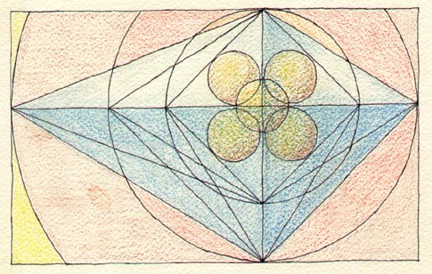

Dante
Rosati Dante
Rosati
Dante
Rosati Dante
Rosati 


Buddhism
The Tibetan Buddhist Resource Center
The Tibetan and Himalayan Digital Library
Buddhist Resource
File
Journal of Buddhist Ethics
Little
Tibet - Tibetan Exiles in New York
The Government of Tibet in Exile
Pali Canon Online
Tibetan Studies
WWW Virtual Library
Asian Classics Input
Project
Worldview
Quiet Mountain - A
Dharma Website
Sparsabhumi
Nyimgma Tantras
Project
International Dunhuang Project
Dharmakirti
E-Texts
Lamrim.com
Tsongkhapa.org
Yogacara
Buddhism Research Association
Classics:
Perseus Project
Electronic
Resourses for Classicists
virgil.org
Languages and Linguistics:
Lojban
Interlingua
The Linguist List
Ancient
Scripts of the World
Scriptorium
Indology
Titus
Homeopathy:
HAHNEMANN'S ADVANCED METHODS:David
Little
Minimum Price Homeopathic
Books Home Page
Homeopathy Mail List by
thread
Homeopathic Internet
Resources List
Homeopathy Online
Peter_Morrell